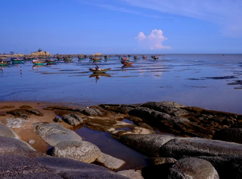

三娘湾因中华海豚的大量涌现一跃成为广西最热门的景区，在这里，金色的沙滩、明媚的阳光、神奇的传说、淳朴的民风、可人海豚，演绎着一个个美丽动人的故事，专家、学者、摄影家、游人，每每踏入这片土地，无不沉醉其间，捕捉着平凡而深刻的镜头，三娘湾骄人的魅力就像一股春风，吹得人们心间了鲜花。
三娘湾海域频频出现中华白海豚，最多时一次出现达一百多条，这一消息在2013年经人民日报、新华网、中央电视台、旅游卫视台等权威报道后，成为三娘湾最大的买点，三娘湾看海豚、观海景，已成为诸多游客的首选，三娘湾一跃成为广西又一黄金旅游景区。